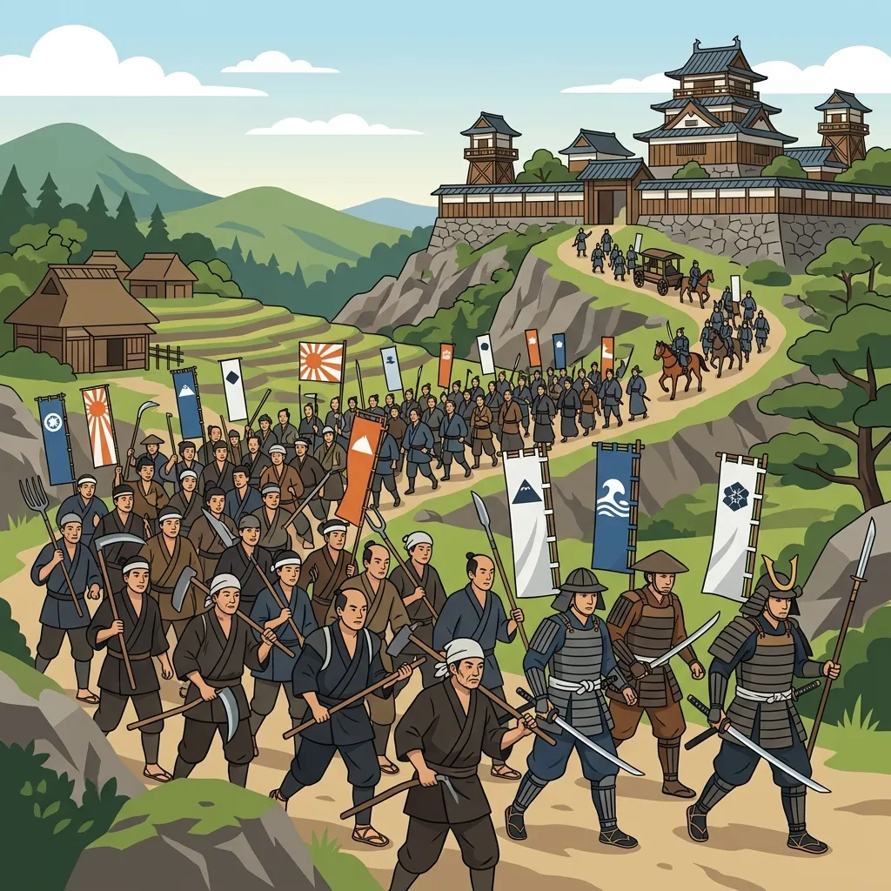
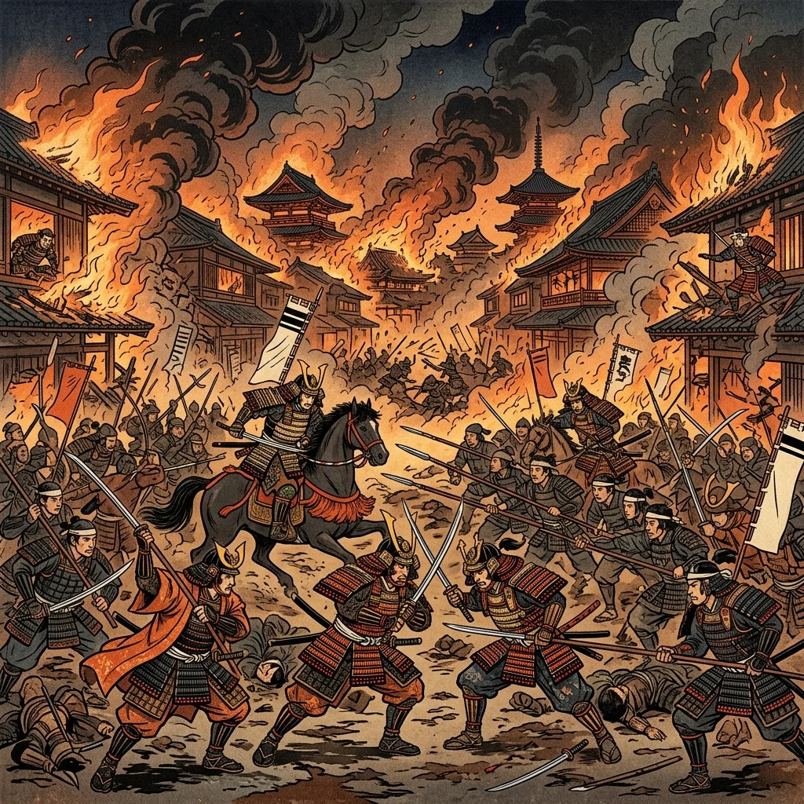
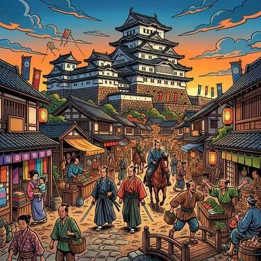

13. 応仁の乱と戦国大名の登場
室町時代の中期になると、民衆が力をつけ、社会の仕組みが下から崩れ始めました。そして決定打となったのが、京都を焼け野原にし、日本を大混乱に陥れた「応仁の乱」です。今回は、民衆のパワーを示す「一揆（いっき）」の広まりと、下剋上の世を生き抜いた「戦国大名」の巧みな支配の工夫を解説します！
1. 民衆の成長と「一揆」の発生
室町時代の農村では、農民たちがまとまって自分たちでルールを決め、水路の管理や山の共同利用などを共同で行う自治組織である惣村（そうそん）がつくられました。農民たちの団結力が非常に強まった時代です。
① 正長の土一揆（1428年）
1428年、近江（滋賀県）の馬借（運送業者）たちの呼びかけをきっかけに、京都周辺の農民たちが団結して暴動を起こしました。これが正長の土一揆（しょうちょうのどいっき）です。彼らは借用書などを燃やし、高利貸しである土倉や酒屋を襲って、借金を帳消し（徳政）にすることを求めました。この一揆の様子は、奈良の柳生徳政碑（岩に刻まれた文字）に今も残されています。

図1：借金の帳消し（徳政）を求めて土倉や酒屋を襲撃する農民たちのイメージ
② 地域的な自治の広まり
農民や地元の武士（国人）の団結は、ついに守護大名をも追い出して自分たちで地域を支配するまでになりました。
- 山城の国一揆（1485年）：現在の京都府南部で、地元の武士と農民が団結し、対立していた守護大名の軍勢を追い出しました。その後、8年間にわたる独自の自治政治を行いました。
- 加賀の一向一揆（1488年）：現在の石川県で、浄土真宗（一向宗）の信仰で結びついた門徒と地元の武士が団結して守護大名を自害させました。その後、なんと約100年間にわたって仏教徒による自治を行いました。
2. 応仁の乱（1467年）と下剋上の世
1467年、第8代将軍の足利義政の後継ぎ争いに加え、幕府の権力を握ろうとする守護大名の細川氏（東軍）と山名氏（西軍）の対立が結びつき、京都を舞台に大乱が始まりました。これが応仁の乱（おうにんのらん）です。
この乱は約11年間も続き、全国から守護大名が集まって戦ったため、戦場となった京都は焼け野原になってしまいました。将軍の権威や幕府のコントロール力は完全に失われました。

図2：細川氏と山名氏が対立し、京都の街のほとんどを消失させた「応仁の乱」のイメージ
① 下剋上（げこくじょう）と戦国時代の始まり
応仁の乱の後は、実力のない幕府や守護大名に代わって、実力のある者が上の者を打ち倒して新しい支配者となる下剋上（げこくじょう）の風潮が日本全国に広まりました。これにより、各地で実力を持った武士たちが領地をめぐって争い合う、約100年間の戦国時代（せんごくじだい）が始まりました。
3. 戦国大名と領国支配の工夫
下剋上によって台頭し、実力で自らの領国を支配した大名を戦国大名（せんごくだいみょう）と呼びます（駿河の今川氏、甲斐の武田氏、越後の上杉氏など）。彼らは生き残るために、自らの軍事や経済、治水を強化する様々な政策を行いました。
① 城下町（じょうかまち）の建設
山の上に敵を防ぐための強固な「山城」を築き、そのふもとに家臣（武士）や商人・職人を集めて住まわせました。これにより、いざという時の軍事力と、地域の商業を一ぺんに発展させました。
② 分国法（ぶんこくほう）の制定
大名が自らの領国内だけで適用する、独自の厳しい法律（分国法／戦国法）を定めました。代表例には、武田信玄が定めた『甲州法度之次第（こうしゅうはっとのしだい）』などがあります。
法律の中では、領民同士が勝手に争うことを禁じる喧嘩両成敗（けんかりょうせいばい）などが定められ、私的な争いを徹底的に取り締まりました。
③ 経済や治水の強化
領内の川が氾濫するのを防ぐ堤防づくり（武田氏の「信玄堤」など）や新田開発、さらに銅や武器の購入資金となる鉱山（金山・銀山）の開拓を精力的に行いました。

図3：城を中心に武士や商人が集まり、経済と防衛の拠点となった「城下町」のイメージ
🔥 この単元のテスト対策・暗記のコツ
-
★
一揆の整理（名前と場所、自治期間）：
・正長の土一揆（1428年）：借金の帳消し（徳政）を求めた、最初の組織的な土一揆。
・山城の国一揆（1485年）：京都府南部で守護大名を追い出し、8年間の自治。
・加賀の一向一揆（1488年）：石川県で一向宗（浄土真宗）徒が守護を自害させ、約100年間の自治。 -
★
応仁の乱の年号（1467年）：
・「人の世（1467）むなしい応仁の乱」で覚えましょう。足利義政の後継ぎ争い、細川氏 vs 山名氏が原因で、戦国時代の幕開けとなりました。 -
★
戦国大名の支配（分国法と喧嘩両成敗）：
・戦国大名が定めた法律を分国法（例：甲州法度之次第）と呼びます。
・特に記述で出るのが喧嘩両成敗で、「どんな理由があっても、喧嘩をした当事者の双方を同じように処罰する」という原則です。